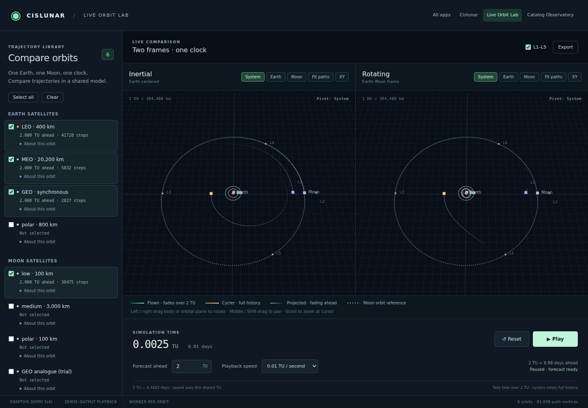

EXPERIMENT WITH DYNAMICS
Live Orbit Lab
Compare 19 orbit presets, from Earth satellites to lunar orbits, halos and cyclers. Watch the same trajectories in inertial and rotating frames, with a continuously advancing forecast.
An idealized circular Earth–Moon model. Best for exploring how orbit families behave.
Open Live Orbit Lab